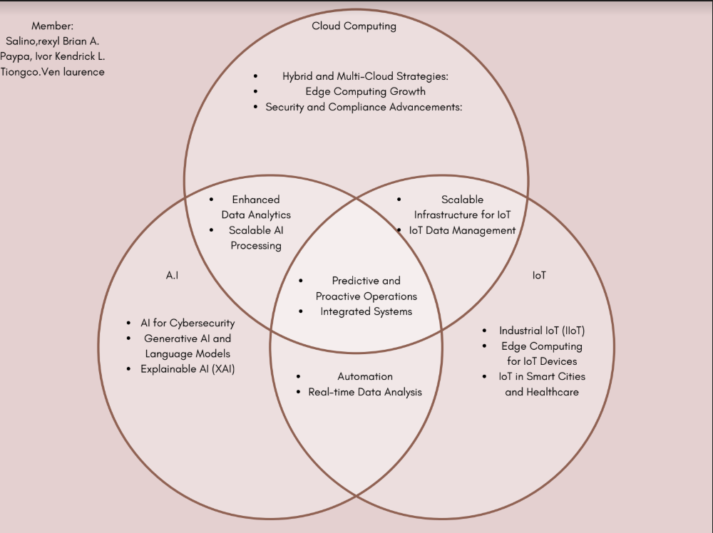
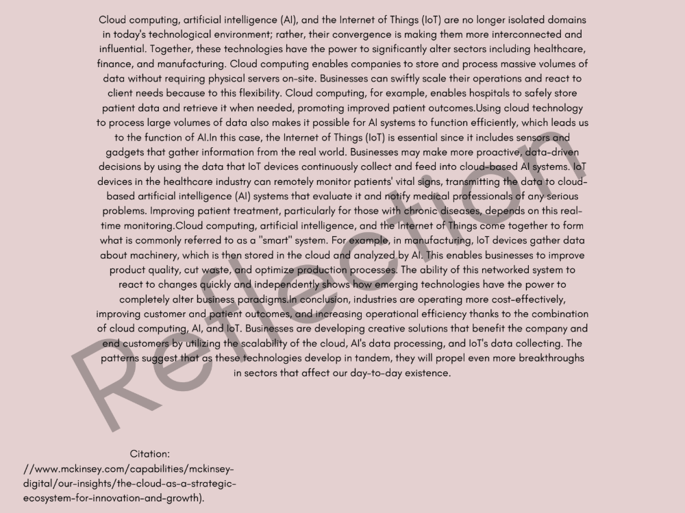

INTRODUCTION TO COMPUTING LESSONS: OUTPUT
- 1. Computing's Impact on Industries
- History of computing and its eras.
- 2. Information Processing Cycle
- Sequence of Input, Processing, and Output.
- 3. Computer Systems
- Components of computer systems.
- 4. Concepts of Computer Security
- Data security, information, cybercrimes, and cybercriminals.
- 5. HTML and CSS



